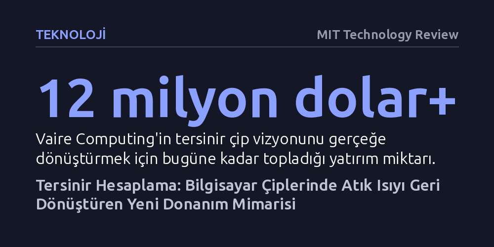

TEKNOLOJI · MIT Technology Review · 2026-09-09
Vaire Computing, işlem sırasında bilgiyi silmeyip enerjiyi depolayan özel bir rezonatör sayesinde harcadığından fazla enerjiyi geri kazanan ilk tersinir çip prototipini üretti. Elli yıllık teoriyi çalışan donanıma dönüştüren bu mimari, veri merkezlerinde atık ısı kaynaklı enerji tüketimini kökten azaltmayı hedefliyor.
Bilgisayarlarda hesaplama sonucu oluşan atık ısının kaçınılmaz bir fizik kuralı değil, bilgiyi silerek çalışan geleneksel mimarinin aşılabilir bir tasarım tercihi olduğunu gösteriyor.

Geleneksel bilgisayar çiplerinde gerçekleştirilen her hesaplama, beraberinde ciddi bir ısı çıkışını getirir. Mühendisler onlarca yıldır bu atık ısıyı hesaplama yapmanın doğal ve kaçınılmaz bir maliyeti olarak kabul etti. Oysa klasik çipler bir işlemi tamamlarken işine yaramayan ara verileri basitçe siler ve silinen her bilgi parçası devrelerden dışarıya ısı şeklinde yayılır. Bu durum, yoğun bir trafikte her kavşağa yaklaşırken sertçe frene basıp ardından yeniden hızlanmak için sürekli yakıt yakan bir otomobilin durumuna benzer; sistem her adımda kazandığı ivmeyi kaybeder.
Vaire Computing'in kurucu ortağı ve baş teknoloji sorumlusu Hannah Earley ise bu kaybın fiziksel bir zorunluluk değil, hatalı bir tasarım tercihi olduğu görüşünde. Tersinir hesaplama (reversible computing) adı verilen alternatif yaklaşım, ara verileri silmek yerine devrede tutmayı hedefler. Hesaplamanın geriye doğru da işletilebilmesini sağlayan bu yöntem, bilginin kaybolmasını önleyerek harcanan enerjinin önemli bir kısmının geri toplanmasına zemin hazırlar.
Tersinir hesaplama fikri yarım asırdan daha uzun bir süre önce teorik olarak ortaya atılmış olsa da mevcut transistör ve devre mimarileriyle pratik bir donanıma uyarlanamamıştı. Klasik elektronik bileşenler, silinen bilgiyi geri çağırmak ve enerjiyi yeniden kullanmak için gereken hassasiyete ve yapıya sahip değildi; bu nedenle kavram uzun yıllar boyunca akademik bir düşünce deneyi olarak kaldı.
Earley bu düğümü çözebilmek için donanımı sıfırdan ele aldı ve geri kazanılan enerjiyi daha sonra kullanılmak üzere depolayan mikroskobik bir rezonatör geliştirdi. Kendi ifadesiyle “gelişmiş bir sarkaç” gibi çalışan bu patentli bileşen, enerjiyi salınım mekanizmasıyla saklayıp devreye geri veriyor. Şirketin geçtiğimiz yıl duyurduğu prototip çip, bileşeni çalıştırmak için gereken elektrik hesaba katıldığında dahi kaybettiğinden daha fazla enerji geri kazanmayı başardı. Bu gelişme, teorik düzeyde sıkışıp kalmış bir alan için ilk somut kanıt niteliği taşıyor.
Henüz dokuz yaşındayken web programlama ile yazılıma adım atan ve ardından Perl ile Java gibi dillerle kod yazan Earley, zamanla yazılımın soyut katmanlarından donanımın en temel yapı taşlarına doğru ilerledi. Cambridge Üniversitesi'nde hesaplamalı biyolog Gos Micklem danışmanlığında başladığı doktora çalışmasında başlangıçta DNA gibi biyolojik materyallerin hesaplamada nasıl kullanılabileceğine odaklanıyordu.
Doktorasının ilk aylarında danışmanının yönlendirmesiyle tersinir hesaplamanın öncülerinden Michael Frank'in 1999 tarihli doktora tezini inceleyen Earley, başlangıçtaki şüphelerinin ardından bilgi, enerji ve ısı arasındaki derin ilişkinin bilişim dünyasını kökten değiştirebileceğini fark etti. 2021'de doktorasını tamamladıktan sonra girişimci Rodolfo Rosini ile bir araya gelerek Vaire'i kurdu ve tezini okuduğu Michael Frank'i de şirketin kıdemli bilim insanı olarak ekibe kattı.
Yeni donanım mimarisinin ortaya çıkışı kolay olmadı. 2022 kışında Iowa'da dondurucu hava koşullarında haftalarca bir bodrum dairesinde çalışan Earley, tersinir mantığı yürütecek devre şemalarını defalarca beyaz tahtaya çizerek tasarladı. Bugüne kadar 12 milyon doları aşkın yatırım alan girişim, teorik bir hayali gerçek silikon üzerinde işleyen bir mühendislik ürününe dönüştürme yolunda ilerliyor.
Yapay zekâ ve büyük veri uygulamaları nedeniyle veri merkezlerinin enerji ihtiyacının hızla arttığı günümüzde, atık enerjiyi geri dönüştürebilen çipler kritik bir çözüm sunabilir. Enerji tüketiminin ve aşırı ısınmanın hesaplama kapasitesini sınırladığı sunucu çiftliklerinden dizüstü bilgisayarlara kadar tüm platformlarda, tersinir çipler çok daha yüksek verimlilik ve düşük işletme maliyeti vadediyor.